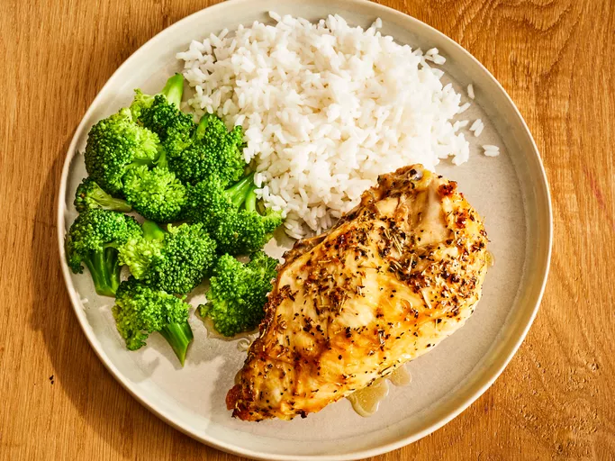

Baked Chicken

Description
Turn bone-in chicken breast into a golden, garlicky, and juicy meal with this 5-star recipe.
Cook up deliciously seasoned and crispy chicken that turns a simple dinner into a sensational meal in a few easy steps.
Ingredients
- 2 large bone-in chicken breast halves with skin
- ¼ cup extra-virgin olive oil
- ½ teaspoon garlic, minced
- ½ teaspoon coarse sea salt
- ½ teaspoon cracked black pepper
- ¼ teaspoon dried rosemary
- ¼ teaspoon dried basi
Steps
- Gather all ingredients.
- Rub chicken breasts with olive oil and garlic; sprinkle with salt, black pepper, rosemary, and basil. Arrange chicken in a large baking dish.
- Refrigerate for at least 45 minutes. Meanwhile, preheat the oven to 375 degrees F (190 degrees C).
- Bake in the preheated oven until chicken meat is no longer pink at the bone and the juices run clear, 45 to 60 minutes.
- An instant-read thermometer inserted in the thickest part of the breast meat should read 165 degrees F (75 degrees C).
- Serve hot and enjoy!
Home